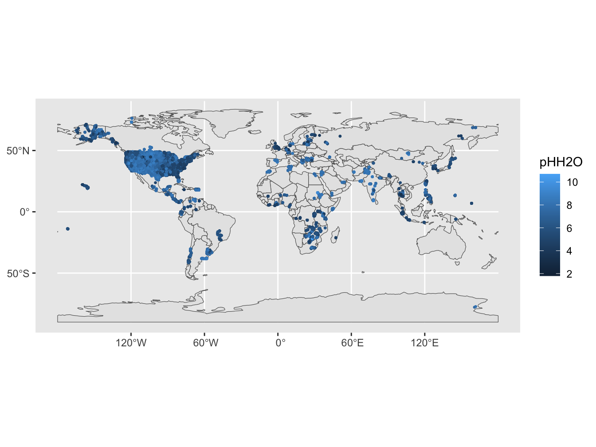
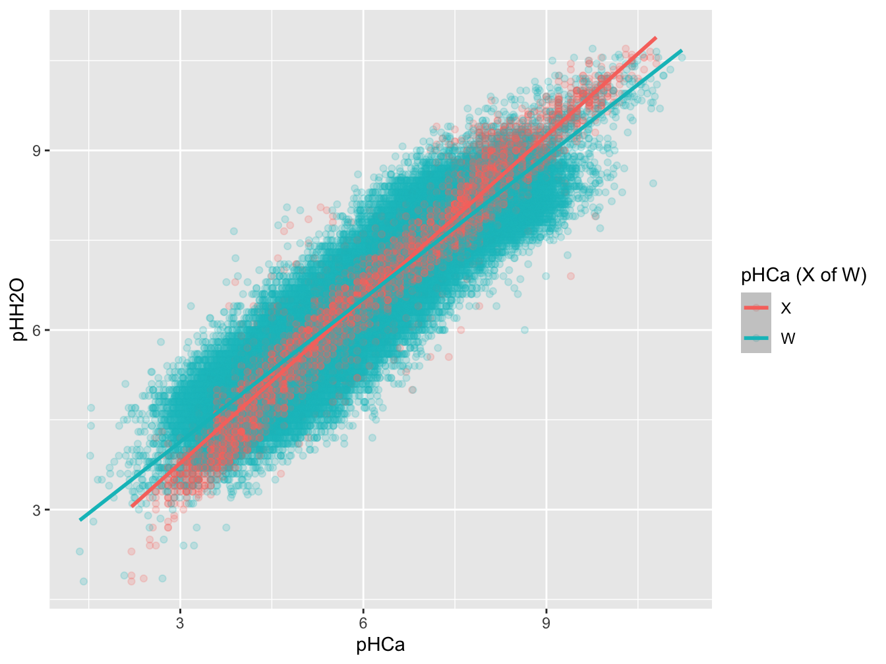
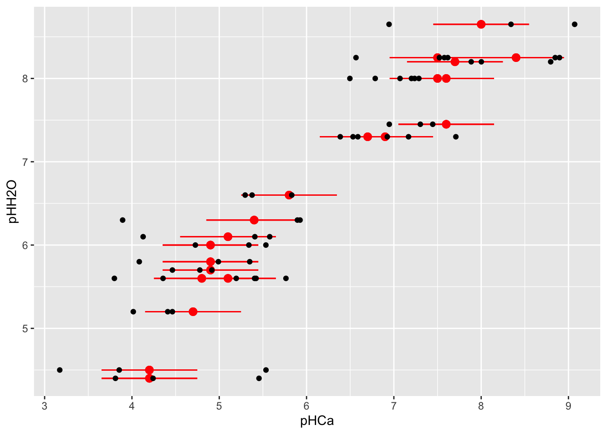
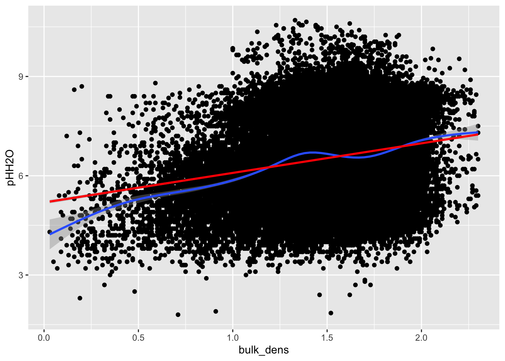

Hoofdstuk 3 Notatie en data
3.1 Notatie
Hieronder introduceren we enkele notaties die we verderop gebruiken.
We noteren \(Y\) als de meting van de bodemvariabele met de referentiemethode en \(X\) als de meting met de niet-referentiemethode. We willen een transferfunctie \(\hat{Y} = f(X)\) ontwikkelen om obv de niet-referentiemethode de waarde van de referentiemethode te voorspellen in een nieuwe dataset (met 95% CI of 95% CrI \([\hat{Y}_{LL}; \hat{Y}_{UL}]\)). We weten echter dat ook de niet-referentiemethode meetfouten heeft (\(U\)). We observeren dus niet rechtstreeks \(X\) maar wel \(W = X + U\). In de praktijk zullen we dus een transferfunctie van de vorm \(\hat{Y} = f(W)\) construeren omdat \(X\) (meestal) niet is waargenomen. De functie \(Y = f(X)\) wordt in de literatuur vaak als de functionele relatie tussen \(Y\) en \(X\) bestempeld, terwijl de functie \(Y = f(W)\) als de proxy relatie tussen \(Y\) en \(X\) wordt omschreven. Om met de meetfouten in de predictor rekening te houden, moeten we naast een hoofdstudie waarin we \(Y\) en \(W\) meten in alle steekproefeenheden (\(N\)) ook een substudie doen met een aselect deel van de steekproefeenheden. Deze substudie kan ofwel bestaan uit herhaalde metingen van \(W\) (replicatie-substudie) ofwel uit een meting van de echte \(X\) (validatie-substudie). De hoofd- en substudies zullen in het algemeen ook extra variabelen bevatten die werden gemeten. We noteren \(Z\) als de extra covariaten die beschikbaar zijn (en veronderstellen dat deze zonder meetfout werden geobserveerd). Deze covariaten kunnen eventueel gebruikt worden om de bias en onzekerheid op de schattingen te verkleinen.
3.2 Data
Om enkele methoden te vergelijken maken we gebruik van een publiek beschikbare dataset over bodem-metingen. De dataset is van WOSIS en gaat over metingen van bodem pH en is beschreven in Mosley et al. (2024). De dataset kan hier gedownload worden: https://figshare.com/s/2ab390e6734ef87d4ebb
De dataset bevat metingen van de pH op basis van twee methoden: pHH20 en pHCa. Voor deze oefening nemen we enkel de locaties waar de pH met beide methoden werd gemeten. Dit bookdown is niet bedoeld als oefening voor een volwaardige bodemstudie, maar als statistische oefening; ik ken nog te weinig van bodemmetingen om een correcte inschatting te maken welke pre-processing nodig is op zulk een dataset. Puur als statistische oefening nemen we hier \(Y\) = pHH2O (referentiemethode) en \(X\) = pHCa (niet-referentiemethode). Figuur 3.1 geeft de locaties weer waarvoor data beschikbaar zijn met beide methoden (enkel visualisatie van pHH2O). Als covariaat \(Z\) nemen we de densiteit van de bodem (bulk_dens) en we nemen enkel die locaties waar deze ook werd gemeten.
data_wosis <- read_csv(
"data/merged_wosis_data_with_precipitation_and_ET.csv"
)
# filter dataset & selecteer variabelen
data_wosis_pH <- data_wosis %>%
filter(
!is.na(pHH2O),
!is.na(pHCa),
!is.na(`Bulk density`)
) %>%
rename(bulk_dens = `Bulk density`) %>%
st_as_sf(coords = c("longitude","latitude"), crs = st_crs("WGS84")) %>%
select(layer_id, country_name, pHH2O, pHCa, bulk_dens, geometry)
Figure 3.1: Map met WoSIS pHH2O metingen (geselecteerde locaties)
We veronderstellen dat de metingen met pHCa (\(X\)) uit de dataset zonder meetfouten zijn gebeurd en we voegen zelf een additieve meetfout toe om de regressie-dilutie te simuleren (we noemen de variabele pHCa_obs): \[W = X + U\] met \(u_i \sim N(0, \tau^2)\) en \(\tau^2 =\) 0.3 (de meetfouten worden verondersteld onafhankelijk te zijn van \(Y\) en \(X\)).
set.seed(123)
data_wosis_pH <- data_wosis_pH %>%
mutate(
pHCa_obs = pHCa + rnorm(N, 0, sqrt(tau2))
)Figuur 3.2 geeft de relatie weer tussen \(Y\) en \(X\) en tussen \(Y\) en \(W\).

Figure 3.2: Scatterplot van pH metingen (H2O vs. Ca). De kleur geeft aan of de meting van de predictor met of zonder meetfout gebeurde.
Het is duidelijk dat door de toevoeging van een meetfout op \(X\) de relatie zwakker wordt (kleinere slope). De puntschatting voor \(\beta_X\) in de volledige dataset is 0.912 terwijl die voor \(\beta_W\) gelijk is aan 0.796 (13% kleiner). In de volgende hoofdstukken presenteren we methoden om op basis van metingen van \(W\) een schatting van \(\beta_X\) te maken.
##
## Call:
## lm(formula = pHH2O ~ pHCa, data = data_wosis_pH)
##
## Coefficients:
## (Intercept) pHCa
## 1.0425 0.9118##
## Call:
## lm(formula = pHH2O ~ pHCa_obs, data = data_wosis_pH)
##
## Coefficients:
## (Intercept) pHCa_obs
## 1.7455 0.79573.2.1 Training- en test data
Om de methoden voor transfer-functies te evalueren, splitsen we de dataset op in een training-dataset en een test-dataset (50/50).
3.2.2 Substudie
In de training-dataset voeren we een substudie uit op 10% van de steekproefeenheden. We doen zowel een substudie waarin we \(X\) zonder meetfout observeren (pHCa_sub) als een substudie met 3 herhaalde metingen van \(W\) (pHCa_obs, pHCa_obs2, pHCa_obs3). Figuur 3.3 toont de data van enkele locaties uit de substudie.
Ntrain <- nrow(data_train)
psub <- .1
idx_sub <- sample(data_train$layer_id, psub * Ntrain, replace = F)
set.seed(123)
data_train <- data_train %>%
mutate(
substudy = ifelse(layer_id %in% idx_sub, 1, NA_real_),
pHCa_sub = ifelse(layer_id %in% idx_sub, pHCa, NA_real_),
pHCa_obs2 = ifelse(layer_id %in% idx_sub,
pHCa + rnorm(n(), 0, sqrt(tau2)), NA_real_),
pHCa_obs3 = ifelse(layer_id %in% idx_sub,
pHCa + rnorm(n(), 0, sqrt(tau2)), NA_real_)
)
rm(idx_sub, psub, Ntrain)
Figure 3.3: Data uit de substudie (slechts 20 locaties worden getoond om de figuur leesbaar te houden). De validatie-substudie registreert de waarde van pHCa zonder meetfout (rode punten). De rode foutenbalk is +/- 1SD van de meetfout (tau) en is in de praktijk niet gekend. De replicatie-substudie registreert 3 herhaalde metingen van de pHCa met meetfout (zwarte punten).
3.2.3 Covariaat
Tot slot visualiseren we ook nog de relatie tussen de pH en de covariaat (bulk densititeit). Figuur 3.4 toont de relatie tussen beide tesamen met een scatterplot-smoother en een lineaire fit. De relatie lijkt voldoende lineair in eerste orde.

Figure 3.4: Relatie tussen bulk densiteit van de bodem en pHH2O.